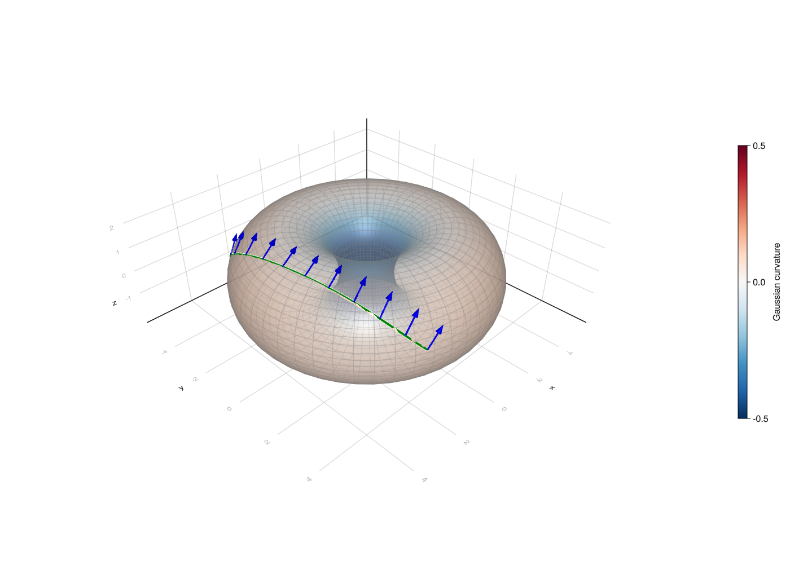
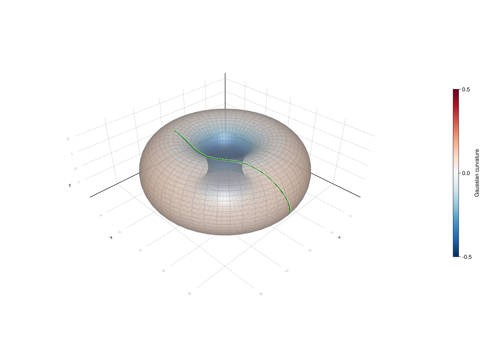

Working in charts
In this tutorial we will learn how to use charts for basic geometric operations like exponential map, logarithmic map and parallel transport.
There are two conceptually different approaches to working on a manifold: working in charts and chart-free representations.
The first one, widespread in differential geometry textbooks, is based on defining an atlas on the manifold and performing computations in selected charts. This approach, while generic, is not ideally suitable in all circumstances. For example, working in charts that do not cover the entire manifold causes issues with having to switch charts when operating on a manifold.
The second one is beneficial if there exists a representation of points and tangent vectors for a manifold which allows for efficient closed-form formulas for standard functions like the exponential map or Riemannian distance in this representation. These computations are then chart-free. Manifolds.jl supports both approaches, although the chart-free approach is the main focus of the library.
In this tutorial we focus on chart-based computation.
using Manifolds, RecursiveArrayTools, OrdinaryDiffEq, DiffEqCallbacks, BoundaryValueDiffEqThe manifold we consider is the M is the torus in form of the EmbeddedTorus, that is the representation defined as a surface of revolution of a circle of radius 2 around a circle of radius 3. The atlas we will perform computations in is its DefaultTorusAtlas A, consisting of a family of charts indexed by two angles, that specify the base point of the chart.
We will draw geodesics time between 0 and t_end, and then sample the solution at multiples of dt and draw a line connecting sampled points.
M = Manifolds.EmbeddedTorus(3, 2)
A = Manifolds.DefaultTorusAtlas()Manifolds.DefaultTorusAtlas()Setup
We will first set up our plot with an empty torus. param_points are points on the surface of the torus that will be used for basic surface shape in Makie.jl. The torus will be colored according to its Gaussian curvature stored in gcs. We later want to have a color scale that has negative curvature blue, zero curvature white and positive curvature red so gcs_mm is the largest absolute value of the curvature that will be needed to properly set range of curvature values.
In the documentation this tutorial represents a static situation (without interactivity). Makie.jl rendering is turned off.
# using GLMakie, Makie
# GLMakie.activate!()
"""
torus_figure()
This function generates a simple plot of a torus and returns the new figure containing the plot.
"""
function torus_figure()
fig = Figure(resolution=(1400, 1000), fontsize=16)
ax = LScene(fig[1, 1], show_axis=true)
ϴs, φs = LinRange(-π, π, 50), LinRange(-π, π, 50)
param_points = [Manifolds._torus_param(M, θ, φ) for θ in ϴs, φ in φs]
X1, Y1, Z1 = [[p[i] for p in param_points] for i in 1:3]
gcs = [gaussian_curvature(M, p) for p in param_points]
gcs_mm = max(abs(minimum(gcs)), abs(maximum(gcs)))
pltobj = surface!(
ax,
X1,
Y1,
Z1;
shading=true,
ambient=Vec3f(0.65, 0.65, 0.65),
backlight=1.0f0,
color=gcs,
colormap=Reverse(:RdBu),
colorrange=(-gcs_mm, gcs_mm),
transparency=true,
)
wireframe!(ax, X1, Y1, Z1; transparency=true, color=:gray, linewidth=0.5)
zoom!(ax.scene, cameracontrols(ax.scene), 0.98)
Colorbar(fig[1, 2], pltobj, height=Relative(0.5), label="Gaussian curvature")
return ax, fig
endtorus_figureValues for the geodesic
solve_for is a helper function that solves a parallel transport along geodesic problem on the torus M. p0x is the $(\theta, \varphi)$ parametrization of the point from which we will transport the vector. We first calculate the coordinates in the embedding of p0x and store it as p, and then get the initial chart from atlas A appropriate for starting working at point p. The vector we transport has coordinates Y_transp in the induced tangent space basis of chart i_p0x. The function returns the full solution to the parallel transport problem, containing the sequence of charts that was used and solutions of differential equations computed using OrdinaryDiffEq.
bvp_i is needed later for a different purpose, it is the chart index we will use for solving the logarithmic map boundary value problem in.
Next we solve the vector transport problem solve_for([θₚ, φₚ], [θₓ, φₓ], [θy, φy]), sample the result at the selected time steps and store the result in geo. The solution includes the geodesic which we extract and convert to a sequence of points digestible by Makie.jl, geo_ps. [θₚ, φₚ] is the parametrization in chart (0, 0) of the starting point of the geodesic. The direction of the geodesic is determined by [θₓ, φₓ], coordinates of the tangent vector at the starting point expressed in the induced basis of chart i_p0x (which depends on the initial point). Finally, [θy, φy] are the coordinates of the tangent vector that will be transported along the geodesic, which are also expressed in same basis as [θₓ, φₓ].
We won’t draw the transported vector at every point as there would be too many arrows, which is why we select every 100th point only for that purpose with pt_indices. Then, geo_ps_pt contains points at which the transported vector is tangent to and geo_Ys the transported vector at that point, represented in the embedding.
The logarithmic map will be solved between points with parametrization bvp_a1 and bvp_a2 in chart bvp_i. The result is assigned to variable bvp_sol and then sampled with time step 0.05. The result of this sampling is converted from parameters in chart bvp_i to point in the embedding and stored in geo_r.
function solve_for(p0x, X_p0x, Y_transp, T)
p = [Manifolds._torus_param(M, p0x...)...]
i_p0x = Manifolds.get_chart_index(M, A, p)
p_exp = Manifolds.solve_chart_parallel_transport_ode(
M,
[0.0, 0.0],
X_p0x,
A,
i_p0x,
Y_transp;
final_time=T,
)
return p_exp
end;Solving parallel Transport ODE
We set the end time t_end and time step dt.
t_end = 2.0
dt = 1e-10.1We also parametrise the start point and direction.
θₚ = π/10
φₚ = -π/4
θₓ = π/2
φₓ = 0.7
θy = 0.2
φy = -0.1
geo = solve_for([θₚ, φₚ], [θₓ, φₓ], [θy, φy], t_end)(0.0:dt:t_end);
# geo_ps = [Point3f(s[1]) for s in geo]
# pt_indices = 1:div(length(geo), 10):length(geo)
# geo_ps_pt = [Point3f(s[1]) for s in geo[pt_indices]]
# geo_Ys = [Point3f(s[3]) for s in geo[pt_indices]]
# ax1, fig1 = torus_figure()
# arrows!(ax1, geo_ps_pt, geo_Ys, linewidth=0.05, color=:blue)
# lines!(geo_ps; linewidth=4.0, color=:green)
# fig1
fig-pt
Solving the logarithmic map ODE
θ₁=π/2
φ₁=-1.0
θ₂=-π/8
φ₂=π/2
bvp_i = (0, 0)
bvp_a1 = [θ₁, φ₁]
bvp_a2 = [θ₂, φ₂]
bvp_sol = Manifolds.solve_chart_log_bvp(M, bvp_a1, bvp_a2, A, bvp_i);
# geo_r = [Point3f(get_point(M, A, bvp_i, p[1:2])) for p in bvp_sol(0.0:0.05:1.0)]
# ax2, fig2 = torus_figure()
# lines!(geo_r; linewidth=4.0, color=:green)
# fig2
fig-geodesic
An interactive Pluto version of this tutorial is available in file tutorials/working-in-charts.jl.